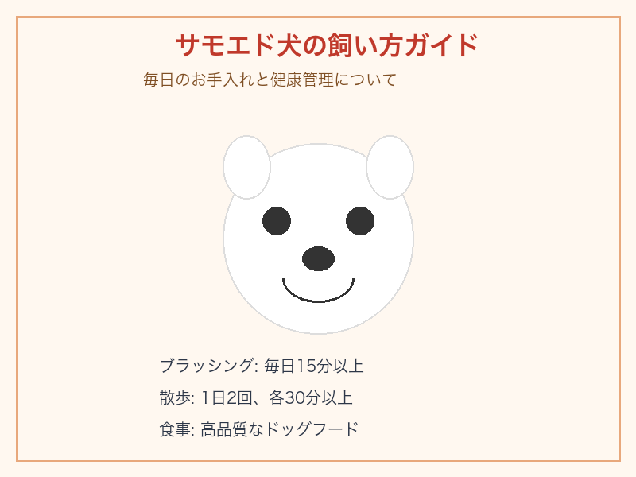
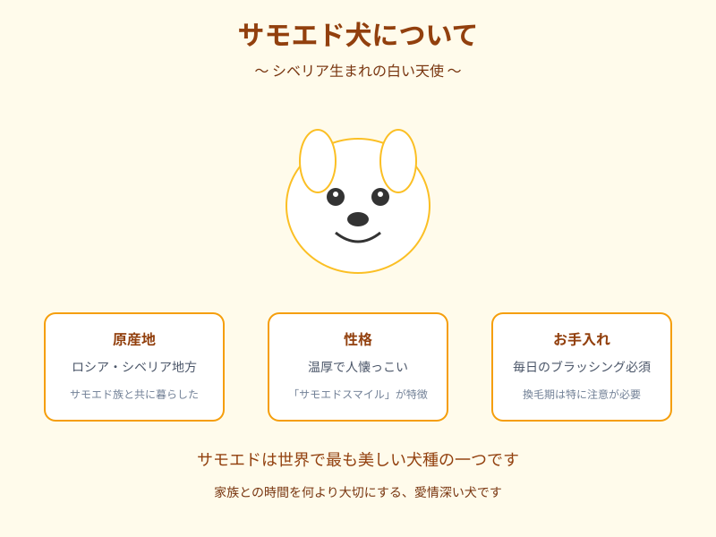
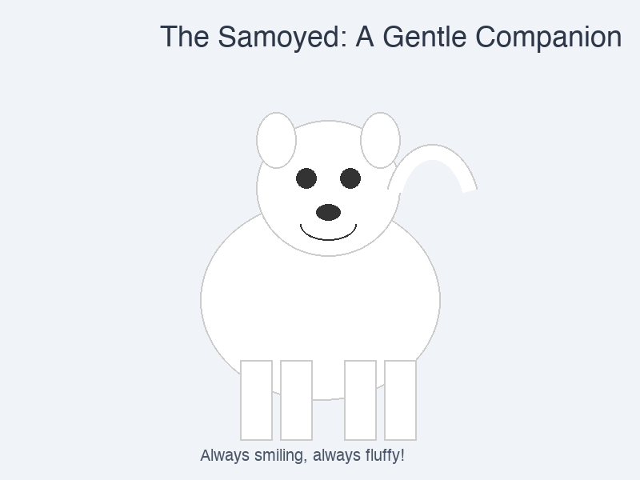
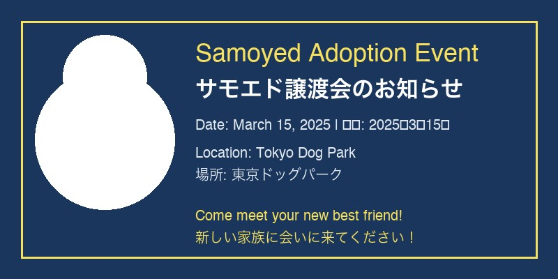

サモエドとは
サモエドは、シベリア原産の大型犬です。美しい白い被毛と「サモエドスマイル」と呼ばれる特徴的な笑顔で世界中の愛犬家に愛されています。もともとはシベリアのサモエド族（ネネツ族）によって、トナカイの放牧、そり引き、そして厳しい寒さの中で飼い主の体を温めるために育てられました。
温和で優しい性格は家庭犬として非常に優れており、特に子供や他のペットとの相性が良いことで知られています。その美しさと穏やかな性格から、世界中で最も人気のある伴侶犬の一つとなっています。
ギャラリー

飼い方ガイド
毎日のブラッシングと適切な運動がサモエドの健康の鍵です。

基本情報
原産地、性格、お手入れについての概要です。

サモエドスマイル
世界で最も愛される犬の笑顔です。

譲渡会情報
各地でサモエドの譲渡会が定期的に開催されています。
犬種の特徴
体格
オス：体高53〜60cm、体重20〜30kg
メス：体高48〜53cm、体重16〜20kg
被毛
密なダブルコート。白、クリーム、ビスケット色。定期的なグルーミングが必要です。
性格
友好的で穏やか、適応力が高い。子供との相性抜群。頑固な面もありますが、飼い主を喜ばせたい気持ちが強い。
運動量
中〜高程度。毎日1〜2時間の運動が必要。ハイキング、ランニング、そり引きなどを好みます。
| 項目 | 評価 | 備考 |
|---|---|---|
| 人懐っこさ | ★★★★★ | 誰にでもフレンドリー |
| 活発さ | ★★★★☆ | 活動的だが落ち着きもある |
| しつけやすさ | ★★★☆☆ | 賢いが独立心が強い |
| お手入れの手間 | ★★★★★ | 被毛の管理に手間がかかる |
| 寒さへの耐性 | ★★★★★ | 寒冷地に最適 |
| 暑さへの耐性 | ★★☆☆☆ | 暑さに弱いため注意が必要 |
飼い方ガイド
グルーミング
サモエドの美しいダブルコートには一貫したケアが必要です。週に2〜3回以上のブラッシングを行い、換毛期（「ブローイングコート」と呼ばれます）には毎日ブラッシングしてください。白い被毛はコートの質感により意外にもセルフクリーニング機能があります。
食事
年齢、体格、活動レベルに適した高品質なドッグフードを与えてください。成犬は通常1日2〜3カップの食事を2回に分けて与えます。サモエドは太りやすい傾向があるため、過食には注意が必要です。
健康管理
- 股関節形成不全 — 定期的な検査を推奨
- 進行性網膜萎縮症 — 眼科検診が重要
- 糖尿病 — 血糖値の監視が必要
- サモエド遺伝性糸球体症 — 腎臓の疾患に注意
季節ごとの注意点
| 季節 | 注意点 | 対策 |
|---|---|---|
| 春 | 換毛期の始まり | 毎日のブラッシング、アレルギーに注意 |
| 夏 | 熱中症のリスク | 涼しい環境の確保、早朝・夕方の散歩 |
| 秋 | 冬毛への換毛 | ブラッシングの強化、栄養管理 |
| 冬 | 最も快適な季節 | 十分な運動、雪遊びの機会を |
歴史と起源
サモエド犬はシベリアのサモエド族（現在のネネツ族）にその名前の由来を持ちます。何千年もの間、これらの犬は過酷な北極圏の環境で牧畜犬、猟犬、そり犬として活躍してきました。
19世紀末から20世紀初頭にかけて、北極探検家たちによってイギリスに持ち込まれました。その美しい外見と温和な性格により、瞬く間に人気が高まりました。サモエドを使用した著名な探検としては、1893年のフリチョフ・ナンセンの北極点遠征や、アーネスト・シャクルトンの南極探検が知られています。
現在、サモエドは主にコンパニオンアニマルとして飼育されていますが、アジリティ、牧羊犬競技会、犬ぞりレースなどの活動でも優れた能力を発揮し続けています。世界中で人気が高まり続けており、北米、ヨーロッパ、アジアに活発なブリードコミュニティがあります。